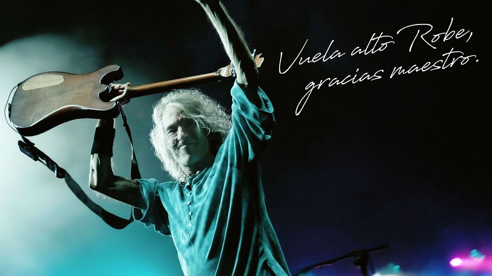

Grupo español de rock de la decada de los 80'
Extremoduro fue un grupo español de rock, fundado en 1987, en la ciudad de Plasencia; Extremadura.
Extremoduro, actualmente, cuenta con 16 exmiembros, entre ellos, Iñaki Antón, Jose Ignacio Cantera, Miguel Colino, o el recien fallecido, Roberto Iniesta, "Robe".
En su discografía, contiene varios albumes conocidos, como "Tú en tu casa, nosotros en la hoguera" (1990); "Rock Transgresivo" (1994); "Yo, minoría absoluta" (2002); o "La ley innata" (2008)
Como tal, no tienen pagina web, pero siempre puedes ver su tienda en la pagina de Robe: https://robe.es